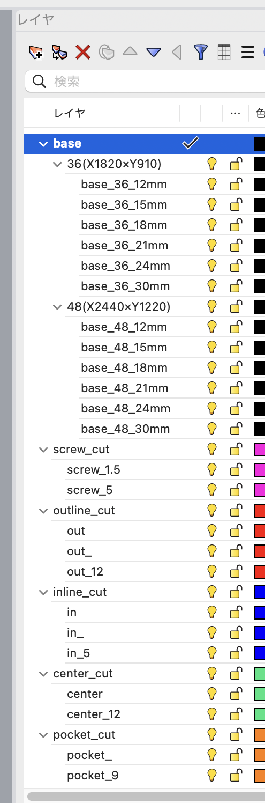

まず全体像。 FABNODEは
DXFのレイヤー名で加工内容を判断します。
baseで板を定義し、
out/
in/
center/
pocketで加工の種類を指定するだけ。ビス・タブ・オフセットは自動なので、
仕上がり寸法の線だけ描けばOKです。まずは
テンプレートDXF（
ダウンロード）を開いて構造を確認するのが近道です。できたデータは
Web見積もり に入れると、その場で金額とエラーの場所が分かります。
1加工の種類（out / in / center / pocket）
刃物は太さがあるので、線のどちら側を切るかで仕上がり寸法が変わります。ここがいちばん大事です。
凡例 実線＝あなたが描くDXFの線 ／ 薄い色＝材料が残る ／ 白＝抜ける・溝（切り取る所） ／ 濃い色＝ポケットで掘った所 ／ 点線＋矢印＝ビット中心の軌道（時計回り） ／ 丸＝ビット（線に接して回る）
| 種類 | 刃物の位置 | 用途 |
|---|
| out | 線の外側を切る | 部品の外形（線の内側が部品として残る） |
| in | 線の内側を切る | 穴・窓抜き（線の内側が抜ける） |
| center | 線の上を切る | 溝・けがき（刃物の幅で掘る） |
オフセットは描かなくてOK。 刃物の半径ぶんの逃げは FABNODE が自動計算します。あなたは仕上がり寸法の線だけ描いてください（他社のように自分でオフセット線を作る必要はありません）。
2レイヤー命名規則
貫通して切り抜くなら番号なし（out）。途中まで（部分加工）なら番号つき（out_15）で深さ(mm)を付けます。
貫通カット ＝ 番号なし
| レイヤー名 | 加工内容 |
|---|
out | 外側で貫通（深さは自動で板厚+0.2mm） |
in | 内側で貫通（穴・窓抜き） |
center | 線の上で貫通 |
部分加工（途中まで）＝ 番号つき
| レイヤー名の例 | 加工内容 |
|---|
out_15 | 外形を深さ15mmまで（貫通させない） |
center_5 | 中心線を深さ5mmの溝・けがき |
pocket_8 | ポケット（面を深さ8mmまで掘る） |
drill / drill_5 | 穴あけ。円を描くと中心に穴、円の直径が穴の大きさ。数字なしは貫通、drill_5 は深さ5mm。刃物径（φ6）と同じ〜少し大きい穴はドリルで突き、それより大きい穴は円に沿って切ります |
bis | 材を固定するビスの位置（加工中に板を固定するためのもの。点または小さい円の中心）。通常は自動配置なので描かなくて構いません |
base_36_18mm / base_48_15mm | 板の枠（加工なし）。36＝1820×910、48＝2440×1220、数字は板厚。mm はあってもなくても可 |
番号つきの深さが板厚より深いとエラーになります。 pocket は板厚と同じ深さもエラー（貫通は in で）。残りが 1〜3mm になる深さは「割れやすい」注意が出ます。貫通させたいときは番号を消して out / in / center に入れてください。
旧レイヤー名 screw は使えません。 材の固定用なら bis、穴あけなら drill にしてください（Web見積もりではエラーになります）。点（POINT）は bis / drill レイヤーにあるものだけ読みます。
テンプレートにない板厚のときは、base_36_18mm の数字を書き換えるだけです（例: 21mm なら base_36_21mm）。Rhino の親子レイヤーはそのままで OK（base$36$base_36_18mm のように書き出されても、最後の名前で判断します）。memo レイヤーと、名前が _cut で終わる親レイヤーは加工しません。文字や寸法線はどのレイヤーにあっても無視します。
Rhinoのレイヤー構成（テンプレート）

この構成のテンプレートで、各グループの子レイヤーに線を割り当てます
3base（板と原点）と加工範囲
- 1つのbase＝板1枚。 複数枚に分けたいときはbaseの矩形を複数置くと、板ごとに分割してデータ生成します。
- 各板の左下が原点(0,0)。機械ではその角に原点を合わせます。
板を機械に固定する余白があるため、板いっぱいには切れません。板のふちから下の余白を空けて部材を置いてください。
| 板厚 | 板のふちの余白 | 部材と部材の間 | 36版の使える範囲 | 48版の使える範囲 |
|---|
| 24mm未満 | 25mm | 35mm | 1770 × 860mm | 2390 × 1170mm |
| 24mm以上 | 30mm | 40mm | 1760 × 850mm | 2380 × 1160mm |
余白が足りなくてもエラーにはなりません。「自動見積の対象外」として送信でき、FABNODE が配置を調整できるか確認してお見積もりします。定尺（36版・48版）以外の板は base_600x1820_20mm のように 横×縦_板厚 で書けます（こちらも確認してからのお見積もりになります）。板の横幅は 2440mm までです。
板の番号は 左下が No.1、右へ進み、上の段へ。エラーは「No.2 の板」のように番号と場所つきで表示されます。
4対応している加工方法
| 加工 | 対応 | 内容 |
|---|
| 輪郭（切り抜き） | ○ | 閉じた線で外側/内側を切る（out / in） |
| 溝彫り | ○ | 線の上を刃物の幅で掘る（center） |
| ポケット（掘り込み） | ○ | 範囲を指定した深さまで掘る（pocket） |
| 穴あけ・ドリル | ○ | drill レイヤーに円を描く（最小径あり・下記）。固定ビスは自動なので通常は作図不要 |
| 3D加工 / 両面加工 / 斜め加工 | ✕ | システム未対応（内容によっては個別対応可。お問い合わせください） |
5刃物と穴の最小径
刃物の直径は板厚で自動で決まります（指定はできません）。
| 刃物径 | 対応板厚 | 穴の目安 |
|---|
| φ6mm | 24mm以下 | 直径 6mm 以上（8mm 以上が確実） |
| φ12mm | 24mm超 | 直径 15mm 以上が確実 |
穴は「刃物径＋1mm」以上にしてください（φ6 の刃物なら 7mm 以上。in の窓なら短い方の辺が 7mm 以上）。それより小さい穴は刃物が入らないため別途お見積もりになります（自動見積には入りません。送信はできます）。条件を満たす穴は、小さくても最後に1周きれいにさらって仕上げます。drill の円が刃物径ちょうど〜＋1mm のときはドリルで突きます。
6ポケット（掘り込み）
- 閉じた線の範囲を、指定深さまで掘り下げます（
pocket_8＝深さ8mm）。
- ポケットで貫通はできません。 貫通させたい場合は
in（内側切り抜き）を使ってください。そのほうが速く仕上がります。
- 島（削り残し）を作りたいとき： ポケットの内側に
pocket_0（深さ0mm）のレイヤーで形を描くと、その部分だけ削らずに残せます。
7外形に接する掘り込み（肉残りに注意）
刃物は丸いので、掘り込みの線を外形に「ぴったり」描くと、外形の内側に刃物半径ぶん（φ6 なら 3mm）の肉が残ります。外形まで掘り切りたいときは、線を外形の外へはみ出させてください。
点線＝描いた掘り込みの線。外形からはみ出した分は材料の外なので何も起きず、角まできれいに掘り切れます
はみ出しが足りないと、Web見積もりで注意（W05「掘り込みの肉残り」）が出て、プレビューにオレンジで表示されます。残っても構わなければそのまま進めます。
8部材間・板端のクリアランス
刃物が通る隙間と、固定用のビスを打つ余白が必要です。板厚で最小距離が変わります（第3章と同じ値）。
| 場所 | 板厚 24mm未満 | 板厚 24mm以上 |
|---|
| 部材どうし | 35mm 以上 | 40mm 以上 |
| 板のふちから部材まで | 25mm 以上 | 30mm 以上 |
近すぎる配置は「自動見積の対象外」になります。 そのまま送信はできますが、FABNODE で配置を調整できるか確認してからのお見積もりになります。急ぎの場合は部材を離して配置し直してください（近すぎる箇所は画面にオレンジで表示されます）。部材に 幅 10mm 未満の細い所があるとタブが付けられず折れるためエラー、10〜15mm は注意が出ます。
9フィレット（内角の逃げ）
刃物は丸いので、内側の角は必ずRになります。木組みで直角にはめ込みたいときは、角に「逃げ」を入れると相手部材がぴったり収まります。
角に少し切り込む「ドッグボーン」「Tボーン」で直角がかみ合う。差し込み方向に沿わせると穴を隠せます
Web見積もりで一括で付けられます。「窓・穴の角」「外形の入隅」それぞれで「R のまま／逃がし（ドッグボーン）を入れる」を選ぶと、刃物の通り道に逃がしが入ります（金額にも反映）。内角が残る所はプレビューに赤丸（W04）で表示されます。1か所ずつの指定や T ボーン（縦／横）は今後対応予定です。
組み手のクリアランスの目安
| 組み方 | すき間の目安（片側） | 備考 |
|---|
| 相欠き（十字に組む） | 0.3〜0.8mm | 材料の厚み誤差（±0.5mm）を吸収する分。きつめなら 0.3、ゆるめなら 0.8 |
| 差し込み（ほぞ・スリット） | 0.1〜0.5mm | 塗装するなら塗膜ぶん広めに |
上の値は目安（仮）です。材料の個体差が大きいので、初回は少し広めにして、組立時にヤスリで追い込むのが確実です。
10タブ・ビス（どちらも自動）
- タブ＝部材が加工中に外れて飛ばないよう、板とつなぐ細い残し。自動配置・作図不要。直線部に付き、角や急カーブ・小穴には付きません。加工後にノコ等で切り離してください（跡が残ります）。
- ビス＝板を機械の台に固定する下穴。自動配置・作図不要。部材にならない余白に置かれ、仕上がり面には打ちません。薄板（12mm以下）は浮きやすいためやや多めに。
11木目と表裏
- 合板の木目（表面の化粧単板）は板の長辺方向です。Web見積もりの PDF・規定外 DXF では「木目優先／歩留まり優先」で配置の向きを選べます。テンプレート DXF（A）はお客さんが置いた向きのまま加工します。
- 細長い部品を繊維と直交する向きに取ると割れやすくなります。長辺を木目にそろえるのが基本です。
- 表裏の指定（きれいな面を上にする等）は、見積もりページの「ご要望・補足」に書いてください。
12加工精度・公差（ご確認ください）
- 設計データから ±1mm程度 の加工誤差が出ることがあります。
- 材料の厚みに ±0.5mm程度 の個体差がある場合があります。
- 合板のポケット加工は、積層により設計より 1〜2mm深く なる場合があります。
- 湿気による膨れ・反り、乾燥による収縮・反りが起きることがあります。
- 木材の個体差により、節・割れ・ヒビ・色味の差が出る場合があります。配送中に軽微な傷がつくこともあります。
精度がシビアな設計は、あらかじめクリアランスを多めに取るか、組立時にヤスリ等で微調整してください。
13入稿前チェックリスト
共通
- 貫通は番号なし
out/in/center、部分加工は番号つき（板厚−1mmまで）か
- 2Dパスのみか（3Dパス・面・ソリッドは不可）
- 線は閉じているか／繋がる線は連結されているか
- ポケット線は外形線に重なるか内側にあるか
- 単位は mm か
- 部材どうし・板端のあきは足りているか（クリアランスの章）
- ビス・タブ・オフセットは作図していないか（すべて自動）
- 部品はすべて base の枠の中にあるか／枠からはみ出していないか
- 穴は刃物径＋1mm（φ6 なら 7mm）以上か（小さい穴は別途お見積もり）
- 旧
screw レイヤーを使っていないか（bis / drill に）
Rhino
- テンプレート（.dxf）を開いて、親レイヤーの子に線を入れる（
base$36$base_36_18mm のように書き出されて OK）
- 書き出しは「ファイル → エクスポート → DXF」、スキーム「2004 ナチュラル」など R2004 以降。テキスト形式で（バイナリ DXF は読めません）
- 曲線は「ポリライン」化して閉じる（
Join → Closed を確認）
Illustrator
- 単位を mm、アートボードの原寸で作図。線は「パス」のまま（アウトライン化・文字は除く）
- レイヤー名をテンプレートの名前（
out in pocket_5 …）に合わせる
- 書き出しは「別名で保存 → AutoCAD 交換ファイル（DXF）」、バージョンは R2004 以降・単位 mm
- レイヤーを分けない場合は PDF で保存して「Web概算見積もり」へ（PDF の描き方）
その他の CAD（Fusion・AutoCAD・Jw_cad など）
- 2D の図面を mm で DXF 書き出し。ブロックは分解、スプラインはポリラインに変換
- レイヤー名を規定どおりにすれば A（自動見積）、そのままなら B（概算）として読めます
よくある間違い
- 板厚の作図ミス（12mm の板を 12.3mm で作図）→ 数字はテンプレートの base 名で指定、線は仕上がり寸法で
- DXF のバイナリ保存 → テキスト形式で書き出す
- 極細線・点・重なった二重線・自己交差の残り → 不要な線は消す、重複は削除
- 開いた線（端点のすき間）→ 2mm 以内なら自動でつなぎますが、それ以上はエラー（E06）
- 部品の重なり・板からのはみ出し → エラー（E07/E09）
- 文字をアウトライン化して線にしてしまう → 文字は文字のまま（無視されます）か
memo レイヤーへ
- 台数分コピーして置く → 数量は見積もりページの「数量（セット数）」で指定。図面は1セットぶんで OK
- 鋭角（R3 未満の入隅）→ 刃物の丸みが残ります（W04）。逃がしを入れるか、角に R3 以上を付ける
14料金の目安
Web見積もりで出る金額は次の式です（税別・税込併記）。
| 項目 | 計算 |
|---|
| 加工費 | 加工時間 × 12,000円/時。ただし 最低加工費 5,000円（加工費がそれ以下でも 5,000円） |
| 材料費 | 使う板の枚数 × 材料の価格（Web見積もりで材料を切り替えて比較できます） |
| データ作成費 | 板1枚あたり 3,000円（DXF 入稿）。手書き・写真などからの場合は 5,000円 |
| 特急 | 通常料金 +20〜40%（ご相談） |
加工時間は、切る線の長さと深さ（パスの回数）から計算します。細かい部品が多い・輪郭が長いほど時間が増えます。小さい部品（100×100mm 未満、または幅 50mm 未満）は仕上がりをきれいにするため3工程で切るので、その分の時間が入ります。
15板厚ごとの数値一覧（まとめ）
| 板厚 | 刃物径 | 穴の最小（刃物径＋1mm） | 板のふち余白（規定／調整可能） | 部品の間（規定／調整可能） | タブ（幅／残し厚） | 部品の最小幅 |
|---|
| 24mm 未満（9〜21mm） | φ6 | 7mm | 25mm ／ 20〜25mm | 35mm ／ 25〜35mm | 20mm ／ 板厚×1/5（2.5〜5mm） | 10mm（15mm 未満は注意） |
| 24mm 以上（24・30mm） | φ12 | 13mm | 30mm ／ 25〜30mm | 45mm ／ 40〜45mm | 20mm ／ 5mm | 10mm（15mm 未満は注意） |
「調整可能」の範囲は、自動見積の対象外になりますが送信できます（FABNODE が配置を調整できるか確認）。それ未満はエラーで送信できません。
16材料
| 材料 | 板サイズ | 特徴 |
|---|
| ラワン合板 | 36版・48版 | 安価で加工しやすい定番。表面はやや粗く、塗装向き。木口に層が見える |
| シナ合板 | 36版・48版 | 表面がなめらかで白っぽい。見せる面・塗装仕上げにきれい。やや高価 |
| ラーチ合板 | 36版 | 針葉樹の木目がはっきり。構造・什器向き。節がある |
| MDF | 36版・48版 | 最も安価で均質。切り口がきれい。水に弱く重い。塗装・看板向き |
| ランバーコア（ラワン／シナ） | 36版・48版 | 軽くて反りにくい。木口に芯材が見える。棚板・箱物向き |
- 板厚は 9・12・15・18・21・24・30mm（材料により異なります）。Web見積もりで材料を切り替えると価格の比較表が出ます。
- 合板の掘り込みは、積層の境目で設計より 1〜2mm 深くなることがあります。
- 無垢材・集成材・定尺外の板は見積もり相談から（自動見積の対象外）。
17仕上げ・研磨・塗装
| 項目 | 選択肢 | 金額 |
|---|
| 研磨 | なし／あり | 加工時間に応じて（研磨単価 × 加工時間）。「なし」はバリや合板の印字が残ります |
| 塗装 | なし／クリアオイル／その他（ウレタン・着色など） | クリアオイルは部品の面積（表裏＋木口）× 単価で自動計算。その他は別途お見積もり |
研磨なしでは塗装を選べません（塗装を選ぶと研磨が自動で「あり」になります）。塗装の下地に研磨が必要なためです。
18納期・受け取り・お支払い
- 納期: 板 5 枚までは 7 営業日以内（発注・入金確認後）。6 枚以上は 5 枚ごとに +3 営業日の目安。
- 特急: 3 営業日以内 +20%、翌営業日 +40%（希望として受け付け、混み具合で可否をご連絡）。
- 受け取り: 工房（横浜市港北区）で引き取り（無料・その場で一緒に検品）／配送（送料は別途、都道府県をお知らせください）。標準の梱包はプチプチ＋巻きダンボールの簡易梱包です。傷のない状態を重視される場合は「丁寧梱包」「直接配送（地域限定）」を別料金でご用意しています。
- お支払い: 前払い（銀行振込）。入金確認後に材料手配と加工を始めます。
- 受け取り後の確認: 配送の外損はその場で配達員に伝えて伝票に記載、中身の傷は翌日までに写真でご連絡（梱包材は保管）。加工の不良は受け取りから 3 営業日以内・組立や塗装の前にご連絡ください。
19テンプレートDXFをダウンロード
レイヤー分け済み・板の枠（36版・48版）入りのテンプレートです。これをベースに作図するのが確実です。使わない板の枠は消すか、そのままでも構いません（部品が入っていない枠は数えません）。
▼ テンプレートDXFをダウンロード
▶ Web見積もりでデータを確認する ／ PDF・規定外DXF の描き方（概算見積もり） ／ エラー・注意の一覧 ／ FAQ